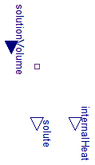
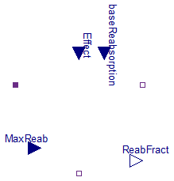
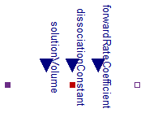
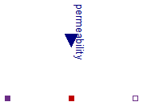

Physiolibrary.Chemical.Components.Substance
Physiolibrary.Chemical.Components.Substance
Physiolibrary.Chemical.Components.Substance
Physiolibrary.Chemical.Components.Substance
Substance accumulation in solution

The main class from “Chemical” package is called "Substance". It has one chemical connector, where molar concentration and molar flow is presented as usually. An amount of a substance ("solute") is accumulated by molar flow inside an instance of this class. In the default setting the volume is set to one liter, so in this setting the concentration at “mol/L” has the same value as the variable solute at “mol”. But in the advanced settings the default volume can be changed with external input. The molar flow at the port can be also negative, which means that the solute leaves the Substance instance.
Extends from Icons.Substance, Interfaces.ConditionalVolume (Chemical processes can be modeled with or without(normalized to 1 liter) variable solvent volume), SteadyStates.Interfaces.SteadyState (Abstract class for any dynamic state calculation (for any derivation), which is driven by SimulationType option.).
| Type | Name | Default | Description |
|---|---|---|---|
| External inputs/outputs | |||
| Boolean | useNormalizedVolume | true | =true, if solvent volume is 1 liter |
| Initialization | |||
| AmountOfSubstance | solute_start | 1e-8 | Initial solute amount in compartment [mol] |
| IO | |||
| Functions to read or store | |||
| replaceable package Utilities | Types.FilesUtilities (direct... | ||
| Initialization | |||
| Real | state_start | solute_start | State start or init value |
| Value I/O | |||
| String | storeUnit | "mmol" | Unit in Utilities input/output function |
| String | stateName | getInstanceName() | Name in Utilities input/output function |
| Boolean | LOAD_STARTS | false | Load start value of state |
| Boolean | SAVE_RESULTS | false | Save final state values |
| Boolean | SAVE_COMPARISON | false | Compare final state values with original values |
| Equilibrium | |||
| Simulation | |||
| SimulationType | Simulation | Types.SimulationType.NormalI... | Dynamic with Initialization or Steady State |
| Boolean | isDependent | false | =true, If zero flow is propagated in eqiulibrium through resistors, impedances, reactions, etc. |
| Solver | |||
| Numerical support of very small concentrations | |||
| AmountOfSubstance | NominalSolute | 0.001 | Numerical scale. Default is from mmol to mol, but for some substances such as hormones, hydronium or hydroxide ions can be much smaller. [mol] |
| Energies | |||
| MolarEnergy | dH | 0 | Standard Enthalpy Change [J/mol] |
| Type | Name | Description |
|---|---|---|
| input VolumeInput | solutionVolume | [m3] |
| output AmountOfSubstanceOutput | solute | Current amount of solute [mol] |
| ChemicalPort_b | q_out | Flux from/to compartment |
| output EnergyOutput | internalHeat | internal heat energy = enthalpy*amountOfSubstance [J] |
2009-2010
Marek Matejak, Charles University, Prague, Czech Republic
 Physiolibrary.Chemical.Components.Stream
Physiolibrary.Chemical.Components.Stream
Flow of whole solution
Possible field values:
forward flow |
backward flow |
|
solutionFlow |
>=0 |
<=0 |
q_in.q |
=solutionFlow*q_in.conc |
=-q_out.q |
q_out.q |
=-q_in.q |
=solutionFlow*q_out.conc |
Extends from Chemical.Interfaces.OnePort (Partial transfer of solute beween two ports without its accumulation), Chemical.Interfaces.ConditionalSolutionFlow (Input of solution volumetric flow vs. parametric solution volumetric flow).
| Type | Name | Default | Description |
|---|---|---|---|
| VolumeFlowRate | SolutionFlow | 0 | Volumetric flow of solution if useSolutionFlowInput=false [m3/s] |
| External inputs/outputs | |||
| Boolean | useSolutionFlowInput | false | =true, if solution flow input is used instead of parameter SolutionFlow |
| Type | Name | Description |
|---|---|---|
| ChemicalPort_b | q_out | |
| ChemicalPort_a | q_in | |
| input VolumeFlowRateInput | solutionFlow | [m3/s] |
| Author: | Marek Matejak |
| Copyright: | In public domains |
| By: | Charles University, Prague |
| Date of: | 2009 |
 Physiolibrary.Chemical.Components.GasSolubility
Physiolibrary.Chemical.Components.GasSolubility
Henry's law of gas solubility in liquid.
Henry's law at equilibrium: The concentration of a gas in a liquid is proportional to the partial pressure of the gas.
p=k*c
where p is the partial pressure of the gas, k is a Henry's law constant and c is a small concentration of the gas in the liquid.
Henry's coefficient k depends on temperature and on the identities of all substances present in solution!
Water fraction (W_solution, plasma 0.94, RBC 0.65 => blood 0.81 ml/ml) in solution can change the solubility of gases in water [1] as c_pure=c_solution/W_solution.
[1] Dash RK, Bassingthwaighte JB. Erratum to: Blood HbO2 and HbCO2 dissociation curves at varied O2, CO2, pH, 2, 3-DPG and temperature levels. Ann Biomed Eng 2010;38:1683-701.
Extends from Icons.GasSolubility, Chemical.Interfaces.ConditionalHeatPort (Partial model to include a conditional HeatPort in order to describe the power loss via a thermal network).
| Type | Name | Default | Description |
|---|---|---|---|
| DiffusionPermeability | solubilityRateCoef | 0.01 | The rate constant of incoming gas to solution (default 10 liter per second) [m3/s] |
| GasSolubility | kH_T0 | Henry's law coefficient at base temperature (i.e. in (mmol/l)/kPa at 25degC: aO2=0.011, aCO2=0.245, ..) [(mol/m3)/(mol/m3)] | |
| Fraction | solventFraction | 1 | Free solvent fraction in liquid (i.e. water fraction in plasma=0.94, in RBC=0.65, in blood=0.81) [1] |
| External inputs/outputs | |||
| Boolean | useHeatPort | false | =true, if HeatPort is enabled |
| Temperature dependence | |||
| Temperature | T | 310.15 | Fixed device temperature if useHeatPort = false [K] |
| Temperature | T0 | 298.15 | Base temperature for kH_T0 [K] |
| Temperature | C | Gas-liquid specific constant for Van't Hoff's change of kH (i.e.: O2..1700K,CO2..2400K,N2..1300K,CO..1300K,..) [K] | |
| Type | Name | Description |
|---|---|---|
| HeatPort_a | heatPort | |
| ChemicalPort_b | q_out | Gaseous solution |
| ChemicalPort_a | q_in | Dissolved in liquid solution |
2009-2012
Marek Matejak, Charles University, Prague, Czech Republic
 Physiolibrary.Chemical.Components.Diffusion
Physiolibrary.Chemical.Components.Diffusion
Solute diffusion
The diffusion conductance parameter can be estimated using the Fick's laws of diffusion:
J= -D*(dPhi)/dx
where
J is molar flow of solute per area [mol/(m2.s)].
D is diffusion constant [m2/s].
dPhi is concentration gradient [mol/m3].
dx is length of diffusion [m].
The solution on both sides must have the same properties (for example solubilities, chemical activities, osmolarities,...)!
Extends from Icons.Diffusion, Chemical.Interfaces.OnePort (Partial transfer of solute beween two ports without its accumulation).
| Type | Name | Default | Description |
|---|---|---|---|
| DiffusionPermeability | Conductance | 0 | Diffusion conductance if useConductanceInput=false [m3/s] |
| External inputs/outputs | |||
| Boolean | useConductanceInput | false | =true, if external conductance value is used |
| Type | Name | Description |
|---|---|---|
| ChemicalPort_b | q_out | |
| ChemicalPort_a | q_in | |
| input DiffusionPermeabilityInput | conductance | [m3/s] |
2009-2013
Marek Matejak, Charles University, Prague, Czech Republic
 Physiolibrary.Chemical.Components.Dilution
Physiolibrary.Chemical.Components.Dilution
Adding/removing of the solvent to/from running solution
Extends from Chemical.Interfaces.OnePort (Partial transfer of solute beween two ports without its accumulation), Icons.Dilution.
| Type | Name | Default | Description |
|---|---|---|---|
| Fraction | Dilution | 1 | Concentration ratio after per before dilution (0..no solutes, 1..no dilution) if useDilutionInput=false [1] |
| External inputs/outputs | |||
| Boolean | useDilutionInput | false | =true, if dilition input is used |
| Type | Name | Description |
|---|---|---|
| ChemicalPort_b | q_out | |
| ChemicalPort_a | q_in | |
| input FractionInput | dilution | Fraction of final undilutes solution [1] |
2009-2010
Marek Matejak, Charles University, Prague, Czech Republic
 Physiolibrary.Chemical.Components.SolutePump
Physiolibrary.Chemical.Components.SolutePump
Prescribed solute flow
Extends from Chemical.Interfaces.OnePort (Partial transfer of solute beween two ports without its accumulation), Chemical.Interfaces.ConditionalSoluteFlow (Input of solute molar flow vs. parametric solute molar flow).
| Type | Name | Default | Description |
|---|---|---|---|
| MolarFlowRate | SoluteFlow | 0 | Volumetric flow of solute if useSoluteFlowInput=false [mol/s] |
| External inputs/outputs | |||
| Boolean | useSoluteFlowInput | false | =true, if solute flow input is used instead of parameter SoluteFlow |
| Type | Name | Description |
|---|---|---|
| ChemicalPort_b | q_out | |
| ChemicalPort_a | q_in | |
| input MolarFlowRateInput | soluteFlow | [mol/s] |
2009-2010
Marek Matejak, Charles University, Prague, Czech Republic
 Physiolibrary.Chemical.Components.Reabsorption
Physiolibrary.Chemical.Components.Reabsorption
Reabsorption as input fraction

Extends from Icons.Reabsorption.
| Type | Name | Default | Description |
|---|---|---|---|
| MolarFlowRate | MaxReabsorption | Modelica.Constants.inf | Maximal reabsorption molar flow if useMaxReabInput=false [mol/s] |
| External inputs/outputs | |||
| Boolean | useEffect | false | =true, if reabsorption fraction is BaseReabsorption^(1/Effect) |
| Boolean | useMaxReabInput | false | =true, if external maximum of reabsorption molar flow is used |
| Boolean | useBaseReabsorption | false | =false, if BaseReabsorption=1 |
| Type | Name | Description |
|---|---|---|
| ChemicalPort_a | Inflow | Tubular inflow |
| ChemicalPort_b | Outflow | Tubular outflow |
| ChemicalPort_b | Reabsorption | Reabsorption from tubules |
| input FractionInput | baseReabsorption | Base fraction of molar inflow for reabsorption flow [1] |
| input FractionInput | Effect | Effects<1 decrease reabsorption, effects>1 increase reabsorption fraction by equation ReabFract=BaseReabsorption^(1/Effect) [1] |
| input MolarFlowRateInput | MaxReab | Maximal allowed reabsorption molar flow rate [mol/s] |
| output FractionOutput | ReabFract | Actual reabsorbed fraction from solute inflow rate [1] |
2009-2010
Marek Matejak, Charles University, Prague, Czech Republic
 Physiolibrary.Chemical.Components.ChemicalReaction
Physiolibrary.Chemical.Components.ChemicalReaction
Chemical Reaction

The Chemical reaction Schema of chemical reaction: s[1]*S[1] + .. + s[nS]*S[nS] <-> p[1]*P[1] + .. + p[nP]*P[nP] where S are substrates, s are stochiometric coefficients of substrates, P are products, p are stochiometric coefficients of products. In equilibrium (at zero reaction flow) is reached the dissociation constant K equation:
K = product(P.^p) / product(S.^s)The dissociation constant is dependent on temperature by Hoff's equation using reaction enthalphy change parameter dH.
The forward rate is kf*volume*product(S.^s), where kf is forward rate coefficient.
The backward rate is (kf/K)*volume*product(P.^p), where backward rate coefficient kb is kf/K.Temperature dependence is calculated by Van't Hoff equation using enthalpy change of reaction as parameter dH:
KaT = KBase * Modelica.Math.exp(((-dH)/Modelica.Constants.R)*(1/T_heatPort - 1/TK))where KBase is base equilibrium constant at base temperature TK and T_heatPort is current temperature.
A change of entropy in reaction can be tabulated or calculated from number of microstates of particles ω by equation
dS = k ln(ω) where k is Boltzmann constant. The Gibbs energy of reaction can be calculate from the change of entropy dS at defined temperature by equation
ΔrG0= dH - T dSwhere T is temperature.
It is possible to calculate the dissociation constant K (for concentratio as molar fracions) from Gibbs energy of reaction ΔrG0 by equation
ΔrG0=-RT ln(K)where R is gass constant and T is temperature.Extends from Chemical.Interfaces.ConditionalVolume (Chemical processes can be modeled with or without(normalized to 1 liter) variable solvent volume), Chemical.Interfaces.ConditionalHeatPort (Partial model to include a conditional HeatPort in order to describe the power loss via a thermal network).
Parameters
| Type | Name | Default | Description |
|---|---|---|---|
| Real | K | 1 | Fixed dissociation constant [SI-unit] if useDissociationConstantInput=false |
| Real | kf | 10^8 | Forward reaction rate coefficient [SI unit] |
| Fraction | solventFraction | 1 | Free solvent fraction in liquid (i.e. water fraction in plasma=0.94, in RBC=0.65, in blood=0.81) [1] |
| External inputs/outputs | |||
| Boolean | useNormalizedVolume | true | =true, if solvent volume is 1 liter |
| Boolean | useDissociationConstantInput | false | =true, if external dissociation ratio is used |
| Boolean | useForwardRateInput | false | =true, if external forward rate is used |
| Boolean | useHeatPort | false | =true, if HeatPort is enabled |
| Reaction type | |||
| Substrates | |||
| Integer | nS | 1 | Number of substrates types |
| StoichiometricNumber | s[nS] | ones(nS) | Stoichiometric reaction coefficient for substrates [1] |
| ActivityCoefficient | as[nS] | ones(nS) | Activity coefficients of substrates [1] |
| Products | |||
| Integer | nP | 1 | Number of products types |
| StoichiometricNumber | p[nP] | ones(nP) | Stoichiometric reaction coefficients for products [1] |
| ActivityCoefficient | ap[nP] | ones(nP) | Activity coefficients of products [1] |
| Temperature dependence | |||
| Temperature | T | 310.15 | Fixed device temperature if useHeatPort = false [K] |
| Temperature | TK | 298.15 | Base temperature [K] |
| MolarEnergy | dH | 0 | Standard Enthalpy Change (negative=exothermic) [J/mol] |
| Type | Name | Description |
|---|---|---|
| input VolumeInput | solutionVolume | [m3] |
| input RealInput | dissociationConstant | Dissociation coefficient [SI-unit] |
| ChemicalPort_b | products[nP] | Products |
| ChemicalPort_a | substrates[nS] | Substrates |
| HeatPort_a | heatPort | |
| input RealInput | forwardRateCoefficient | Reaction forward rate coefficient [SI-unit] |
2013-2014
Marek Matejak, Charles University, Prague, Czech Republic
Extends from Modelica.Icons.Package (Icon for standard packages).
| Name | Description |
|---|---|
| Substance accumulation in solution | |
| Chemical Reaction | |
| Solute diffusion | |
| Henry's law of gas solubility in liquid. | |
| Degradation of solute | |
| Clearance with or without solvent outflow | |
| Flow of whole solution | |
| Prescribed solute flow | |
| Chemical species definition by independent binding sides of macromolecule | |
| Adding/removing of the solvent to/from running solution | |
| Reabsorption as input fraction | |
| Donnan's equilibrium of electrolytes usable for glomerular membrane, open/leak membrane channels, pores, ... |
 Physiolibrary.Chemical.Components.Degradation
Physiolibrary.Chemical.Components.Degradation
Degradation of solute
Extends from Interfaces.ConditionalVolume (Chemical processes can be modeled with or without(normalized to 1 liter) variable solvent volume).
| Type | Name | Default | Description |
|---|---|---|---|
| Time | HalfTime | Degradation half time. The time after which will remain half of initial concentration in the defined volume when no other generation nor clearence nor degradation exist. [s] | |
| External inputs/outputs | |||
| Boolean | useNormalizedVolume | true | =true, if solvent volume is 1 liter |
| Type | Name | Description |
|---|---|---|
| input VolumeInput | solutionVolume | [m3] |
| ChemicalPort_a | q_in | Degraded solute outflow |
| Author: | Marek Matejak |
| Copyright: | In public domains |
| By: | Charles University, Prague |
| Date of: | 2013 |
 Physiolibrary.Chemical.Components.Clearance
Physiolibrary.Chemical.Components.Clearance
Clearance with or without solvent outflow
Extends from Chemical.Interfaces.ConditionalSolutionFlow (Input of solution volumetric flow vs. parametric solution volumetric flow).
| Type | Name | Default | Description |
|---|---|---|---|
| VolumeFlowRate | Clearance | 0 | Clearance of solute if useSolutionFlowInput=false [m3/s] |
| Real | K | 1 | Coefficient such that Clearance = K*solutionFlow [1] |
| VolumeFlowRate | SolutionFlow | Clearance/K | Volumetric flow of solution if useSolutionFlowInput=false [m3/s] |
| External inputs/outputs | |||
| Boolean | useSolutionFlowInput | false | =true, if solution flow input is used instead of parameter SolutionFlow |
| Type | Name | Description |
|---|---|---|
| input VolumeFlowRateInput | solutionFlow | [m3/s] |
| ChemicalPort_a | q_in | solute outflow |
| Author: | Marek Matejak |
| Copyright: | In public domains |
| By: | Charles University, Prague |
| Date of: | 2009 |
 Physiolibrary.Chemical.Components.Speciation
Physiolibrary.Chemical.Components.Speciation
Chemical species definition by independent binding sides of macromolecule

This block identifies one specific chemical form of one macromolecule defined by forms of its subunits (one chosen chemical species - called specie).
Only main connector called species is designed for inflow and outflow of macromolecule to/from system. The concentration in this connector is the concentration of its specific specie.
Connectors subunitSpecies[:] represent specific forms of the macromolecule subunit types. If the subnunit type occures n-times in macromolecule, the inflow is n-time greater than the inflow of macromolecule.
Initial total concentrations of subunits must be set to be right distribution of total macromolecule concentration. So the ratios between subunit concentrations are the ratios of their occurence in macromolecule. In equilibrium are this proporties fullfiled.
For example: If the macromolecule has four identical independent subunits and each subunit can occur in two form F1 and F2, then the concentration of macromolecule specie composed only from four subunits in form F1 is species.conc=conc*fF1^4.
Where:
conc is totat concentration of macromolecule in system accumulated by species.q,
fF1 = F1/(F1+F2) is fraction of form F1 in subsystem of subunit,
4 is number of subunits (numberOfSubunit).
This block can be connected to chemical reactions such as it was the chosen species with subsystem behind. It is recommended to use this block only as an equilibrated subsystem.
Enthalpy of each subunit species can be presented as subunitEnthalpies[:]. Then the total enthalpy of the chemical system can be calculated by equation:
And the stored heat as enthalpy is systemEnthalpy*totalSubsystemAmount.
Extends from Icons.Speciation, SteadyStates.Interfaces.SteadyStateSystem (Global abstract class, for additional global state equations), Chemical.Interfaces.ConditionalVolume (Chemical processes can be modeled with or without(normalized to 1 liter) variable solvent volume).
| Type | Name | Default | Description |
|---|---|---|---|
| Integer | NumberOfSubunits | 1 | Number of independent subunits occuring in molecule |
| EnergyInput | subunitInternalHeat[NumberOfSubunits] | internalHeatOfSubunit | [J] |
| External inputs/outputs | |||
| Boolean | useNormalizedVolume | true | =true, if solvent volume is 1 liter |
| Simulation | |||
| Simulation type | |||
| SimulationType | Simulation | Types.SimulationType.SteadyS... | Dynamic with Initialization or Steady State |
| Equilibrium | |||
| Integer | NumberOfDependentStates | NumberOfSubunits - 1 | Number of additional steady state equation of the system |
| Heat | |||
| External inputs/outputs | |||
| Boolean | useInternalHeatsInput | false | =true, if subunitInternalHeat inputs are used instead of parameter SubunitEnthalpies |
| MolarEnergy | SubunitEnthalpies[NumberOfSubunits] | zeros(NumberOfSubunits) | Enthalpy changes of substances (can relative to one choosen specific form of chemical substance in the system) if useEnthalpiesInput=false [J/mol] |
| Type | Name | Description |
|---|---|---|
| input VolumeInput | solutionVolume | [m3] |
| ChemicalPort_a | specificForm | Specific form composed with subunits form of subunitSpiecies |
| ChemicalPort_a | specificSubunitForm[NumberOfSubunits] | Specific form of subunits of specific molecule form in connector called spieces |
| input AmountOfSubstanceInput | amountOfSubunit[NumberOfSubunits] | Total amount of the subunits in all forms [mol] |
| output AmountOfSubstanceOutput | amount | Total amount of macromolecules in this system [mol] |
| output EnergyOutput | internalHeat | Relative internal heat of all chemical forms in this system [J] |
| input EnergyInput | subunitInternalHeat[NumberOfSubunits] | [J] |
2013
Marek Matejak, Charles University, Prague, Czech Republic
 Physiolibrary.Chemical.Components.Membrane
Physiolibrary.Chemical.Components.Membrane
Donnan's equilibrium of electrolytes usable for glomerular membrane, open/leak membrane channels, pores, ...

Filtration throught semipermeable membrane.
The penetrating particles are driven by electric and chemical gradient to reach Donnan's equilibrium. The permeabilities of particles are used only in dynamic simulation with non-zero fluxes. If zero-flow Donnan's equilibrium is reached, it is independent on the permeabilities.
This class can be used for glomerular membrane, open(leak) channels (pores) of cellular (or any lipid bilayer) membrane, chloride schift, ...
The membrane permeabilities depends on (D/membrameThicknes)*membraneArea, where D is Fick's diffusion coefficient.
................................
ALP .. small penetrating anion
P .. nonpenetrating protein with negative charge
C .. small penetrating cation
In outer side of membrane are not protein P (it leaves inside).
In equilibrium 4 concentration are unknown:
ALP_in, ALP_out, C_in, C_out.
Closed system equilibrium equations:
tALP = ALP_in + ALP_out ... total amount of ALP
tC = C_in + C_out ... total amount of C
P + ALP_in = C_in ... electroneutrality inside
ALP_out = C_out ... electroneutrality outside
----------------------------------------------------
It is possible to write these equations also in form of KAdjustment, which connect also more than tree type of particles with Donnan's equilibrium equations:
ALP_in/ALP_out = (1-KAdjustment)
C_in/C_out = (1+KAdjustment)
where KAdjustment = P/(2*C_in-P) and C_out=ALP_out=(2*C_in-P)/2, because ALP_in/ALP_out = (C_in - P)/C_out = (2C_in-2P)/(2C_in-P) = 1 - P/(2C_in-P) = 1-KAdjustment and C_in/C_out = (2C_in)/(2C_in-P) = 1 + P/(2C_in-P) = 1+KAdjustment .
Equilibrated is chemical potential, not concentrations (c1,c2)!
Equality of chemical potential is approximated by equality of partial pressure (p1,p2):
p1=kH1*c1
p2=kH2*c2
c2 = (kH1/kH2) * c1
Henry constant between both side can be defined as kH_T0 = kH1/kH2 at temperature T0, where kH1 is Henry constant in first side of membrane and kH2 is Henry constant in second side of membrane.
kH1 = kH1_T0 * Modelica.Math.exp(C1* (1/T - 1/T0))
kH2 = kH2_T0 * Modelica.Math.exp(C2* (1/T - 1/T0))
kH1/kH2 = kH_T0 * Modelica.Math.exp(C * (1/T - 1/T0))
Specific constant for Van't Hoff's change of kH_T0 can be defined as C = C1-C2, where C1 is specific constant in first side of membrane and C2 is specific constant in second side of membrane.
Extends from Icons.Membrane, Chemical.Interfaces.ConditionalHeatPort (Partial model to include a conditional HeatPort in order to describe the power loss via a thermal network).
| Type | Name | Default | Description |
|---|---|---|---|
| Integer | NumberOfParticles | 1 | Number of penetrating particle types |
| Integer | Charges[NumberOfParticles] | zeros(NumberOfParticles) | Elementary charges of particles |
| DiffusionPermeability | Permeabilities[NumberOfParticles] | zeros(NumberOfParticles) | Permeabilities of particles through membrane chanel [m3/s] |
| Fraction | solventFractionInside | 1 | Free solvent fraction inside (i.e. water fraction in plasma=0.94, in cells=0.65, in blood=0.81) [1] |
| Fraction | solventFractionOutside | 1 | Free solvent fraction outside (i.e. water fraction in plasma=0.94, in cells=0.65, in blood=0.81) [1] |
| External inputs/outputs | |||
| Boolean | useHeatPort | false | =true, if HeatPort is enabled |
| Boolean | usePermeabilityInput | false | =true, if external permeability value is used |
| Temperature dependence | |||
| Temperature | T | 310.15 | Fixed device temperature if useHeatPort = false [K] |
| Temperature | T0 | 298.15 | Base temperature for kH_T0 [K] |
| Temperature | C[NumberOfParticles] | zeros(NumberOfParticles) | Specific constant difference (C1-C2) for Van't Hoff's change of kH [K] |
| Different solubilities | |||
| GasSolubility | kH_T0[NumberOfParticles] | ones(NumberOfParticles) | Equilibrated concentration ratio at temperature T0 - can be estimated by Henry's law coefficient ratios (kH1/kH2) [(mol/m3)/(mol/m3)] |
| Type | Name | Description |
|---|---|---|
| HeatPort_a | heatPort | |
| ChemicalPort_a | particlesInside[NumberOfParticles] | inner side of membrane, solution |
| ChemicalPort_b | particlesOutside[NumberOfParticles] | outer side of membrane, solution |
| input DiffusionPermeabilityInput | permeability[NumberOfParticles] | [m3/s] |